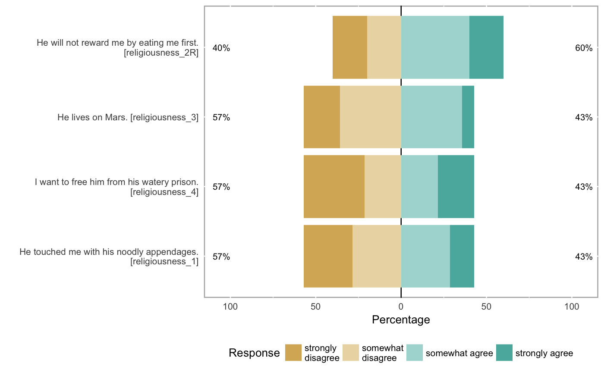

If you've retrieved an item table using formr_items() you can use this
function to retrieve a likert::likert() object that can be used with the likert package functions (which makes nice plots). You can and should subset the results table to focus on items by scale or response format. The aggregator will interrupt if the response format changes.
formr_likert(item_list, results)
| item_list | an item_list |
|---|---|
| results | survey results |
results = jsonlite::fromJSON(txt = system.file('extdata/gods_example_results.json', package = 'formr', mustWork = TRUE)) items = formr_items(path = system.file('extdata/gods_example_items.json', package = 'formr', mustWork = TRUE)) likert_items = formr_likert(item_list = items[2:5], results = results) plot(likert_items)